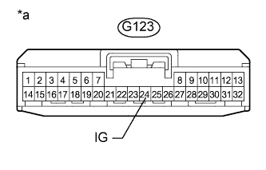

DTC C1882/82 Недопустимое напряжение питания |
| Код DTC | Условие обнаружения DTC | Неисправный участок |
| C1882/82 | Напряжение на контакте IG в течение 0,5 с составляет не более 10 В или не менее 16 В |
|
| 1.СНИМИТЕ ПОКАЗАНИЯ ПОРТАТИВНОГО ДИАГНОСТИЧЕСКОГО ПРИБОРА (НАПРЯЖЕНИЕ ПИТАНИЯ IG) |
Выключите зажигание.
Подсоедините портативный диагностический прибор к DLC3.
Включите зажигание (IG).
Включите портативный диагностический прибор.
Войдите в следующие меню: Chassis / KDSS / Data List.
Выберите указанный ниже параметр из списка Data List и считайте его значение с дисплея портативного диагностического прибора.
| Информация на дисплее прибора | Измеряемая величина / диапазон измерения | Нормальное состояние | Замечание по диагностике |
| IG Power Source Voltage | Напряжение питания IG / Мин.: 0,0 В Макс.: 25,5 В | Зажигание включено (IG): 11 - 14 В | - |
|
| ||||
| OK | |
| 2.СНОВА ПРОВЕРЬТЕ DTC |
Сбросьте коды DTC (Нажмите здесь).
Проверьте коды DTC (Нажмите здесь).
| Результат | Следующий шаг |
| DTC выводится | А |
| DTC не выводится | B |
|
| ||||
| А | ||
| ||
| 3.ПРОВЕРЬТЕ ЖГУТ ПРОВОДОВ И РАЗЪЕМ (ВЫВОД IG) |
Отсоедините разъем ЭБУ стабилизаторов.
|  |
Измерьте напряжение в соответствии со значениями, приведенными в таблице.
| Контакты для подключения диагностического прибора | Положение переключателя | Заданные условия |
| G123-24 (IG) - масса | Зажигание включено (IG) | 11 – 14 В |
| *a | Вид спереди разъема со стороны жгута проводов: (к ЭБУ стабилизаторов) |
|
| ||||
| OK | |
| 4.ПРОВЕРЬТЕ ЖГУТ ПРОВОДОВ И РАЗЪЕМ (ВЫВОД GND) |
Отсоедините разъем ЭБУ стабилизаторов.
Измерьте сопротивление в соответствии со значениями, приведенными в таблице ниже.
| Контакты для подключения диагностического прибора | Режим | Заданные условия |
| G123-22 (GND) - масса | Всегда | Менее 1 Ом |
|
| ||||
| OK | ||
| ||